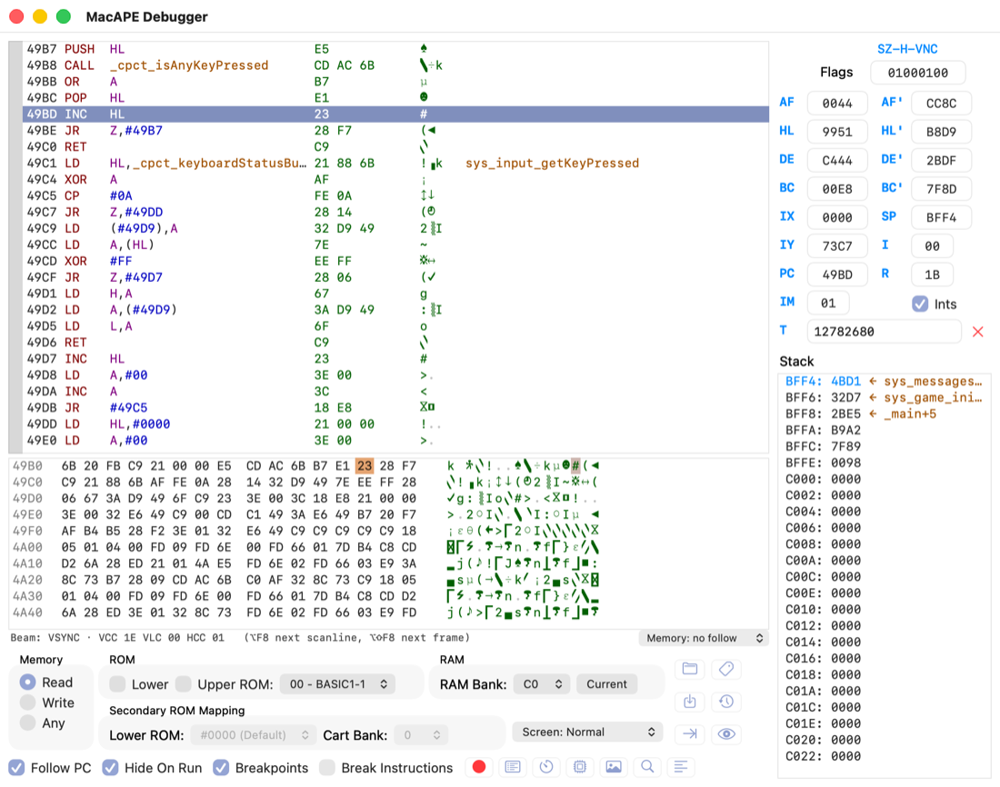
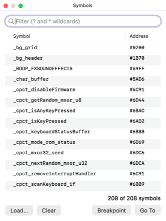
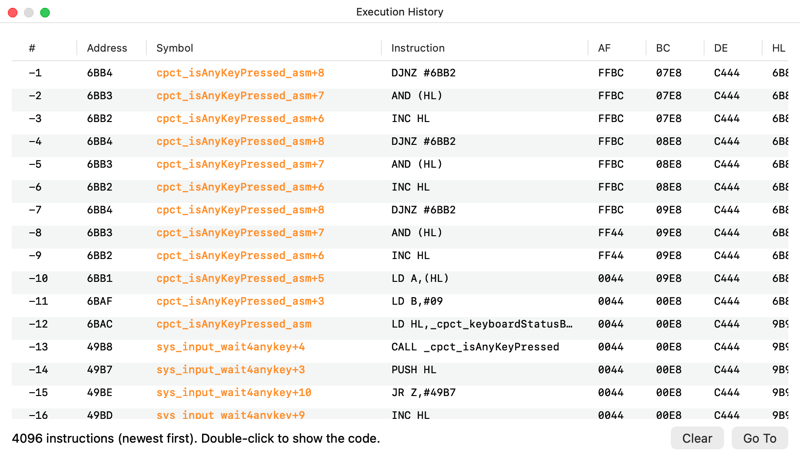

El depurador
Depurador del Z80 integrado: pausa la máquina en cualquier instrucción, muestra y modifica registros, memoria y hardware, y usa los símbolos de tu propio código (CPCtelera/SDCC, RASM, sjasmplus). Sigue la ventana de WinAPE y añade navegación por el código, Step Out, raster, watch, logpoints, historial y depuración hacia atrás.
Introducción
Se abre con F7 (pausa), con el botón de pausa del panel de la ventana principal, con el menú Debug o automáticamente al saltar un breakpoint. Cerrar la ventana reanuda la emulación, igual que F9.
El título de la ventana indica cuántos símbolos hay cargados: MacAPE Debugger — 208 symbols from boop.noi.

La ventana
- Izquierda, arriba: panel de desensamblado.
- Izquierda, en medio: volcado de memoria, con el indicador del haz y el selector Follow debajo.
- Abajo: grupos Memory, ROM, RAM y Secondary ROM Mapping, selector Screen, botones de fichero, opciones y herramientas.
- Derecha: flags, registros, IM, Ints, contador T y pila.
Tamaño mínimo: 980 × 600. Por debajo, los controles inferiores no caben.
Control de ejecución
Cada parada (pausa, paso, breakpoint) lleva el desensamblado al PC y lo selecciona, aunque estuvieras mirando otra dirección. Los registros y flags que cambiaron desde la parada anterior se muestran en rojo.
| Acción | Tecla | Qué hace |
|---|---|---|
| Pause / Step Into | F7 | Si corre, pausa. En pausa, ejecuta una instrucción y entra en los CALL. Un HALT se completa hasta la interrupción. |
| Step Into | ⇧F7 | Igual que F7 en pausa (alias del menú). |
| Step Over | F8 | Ejecuta una instrucción; los CALL, RST y las instrucciones de bloque (LDIR, OTIR…) se ejecutan enteros. |
| Step Out | ⇧F8 | Corre hasta que un RET sale de la función actual y para justo después del CALL que la llamó. Un POP no lo dispara. |
| Run to Cursor | F4 | Corre hasta la línea seleccionada en el desensamblado. |
| Step Scanline | ⌥F8 | Corre hasta la siguiente línea del haz. |
| Step Frame | ⌥⇧F8 | Corre hasta el siguiente VSYNC. |
| Run | F9 | Reanuda. Cerrar la ventana del depurador hace lo mismo. |
Run to Cursor, Step Over sobre un CALL, Step Out y los pasos de raster se paran antes si encuentran un breakpoint. Pausar a mano o pulsar F9 cancela el objetivo pendiente.
Hide On Run oculta el depurador mientras la máquina corre; vuelve a aparecer en la siguiente parada.
En el teclado del Mac las teclas F hacen funciones del sistema por defecto: usa fn+F7, o activa «Usar F1, F2, etc. como teclas de función estándar» en Ajustes del Sistema → Teclado. Ctrl+F8 está reservado por macOS, por eso el paso por línea usa ⌥.
Con una grabación en reproducción también puedes ir hacia atrás.
Desensamblado
Cada línea es una instrucción: dirección instrucción … bytes caracteres símbolo.
- Colores: mnemónico en rojo, registros y condiciones en morado, números en azul, símbolos en naranja. La línea del PC va resaltada en azul.
- Operandos con nombre:
CALL #4DAFse muestra comoCALL sys_sound_initsi hay símbolo. Si el operando es largo, se recorta con «…». - Columna de símbolo: a la derecha, el nombre del símbolo cuyo valor es esa dirección.
- Caracteres: los bytes de la instrucción con la fuente CPC de WinAPE.
- Breakpoints: clic en la franja gris de la izquierda, doble clic en la línea o F5. Se marcan con un punto rojo.
- Selección de rango: arrastrando o con ⇧+clic. La usan Disassemble y Mark as Data.
- Desplazamiento: rueda del ratón, flechas, Re Pág y Av Pág. Al desplazarte se desmarca Follow PC.
Navegar sin ejecutar
- Enter sobre un
CALL,JP,JR,DJNZoRSTlleva al destino. EnJP (HL),(IX)o(IY)usa el valor actual del registro. - Enter sobre otra instrucción con una dirección de 16 bits (
LD HL,#6B88,LD A,(#49D9)) abre esa dirección en el panel de memoria. - Retroceso vuelve al punto anterior. El historial guarda 100 saltos e incluye Goto, Find, la ventana de símbolos y el doble clic en la pila.
Menú contextual
| Opción | Atajo | Qué hace |
|---|---|---|
| Find… | Ctrl+F / ⌘F | Buscar (ver Buscar e ir a). |
| Find Again | F3 | Siguiente coincidencia. |
| Goto… | Ctrl+G / ⌘G | Ir a una dirección, símbolo o expresión. |
| Run to Cursor | F4 | Correr hasta la línea seleccionada. |
| Run Back to Here | ⌥F4 | Solo en una reproducción: ir a la última vez que el PC estuvo ahí. |
| Toggle Breakpoint | F5 | Poner o quitar un breakpoint. |
| Add Logpoint… | — | Breakpoint que escribe un mensaje y no para (ver Logpoints). |
| Disassemble… | — | Exportar un rango a un fichero .asm. |
| Mark as Data | — | Marcar la selección como datos (se muestra como DB/DW). |
| Clear Data Area | — | Quitar el área de datos de esa dirección. |
Volcado de memoria
Cada fila muestra 16 bytes: dirección, valores en hex y su representación como caracteres CPC.
- Editar en hex: clic en un byte y escribe dígitos hex; el cursor avanza solo.
- Editar en ASCII: clic en la columna de caracteres, o Ctrl+Tab para alternar; lo que tecleas se escribe como carácter.
- Selección: arrastrar, ⇧+clic o ⇧+flechas.
- Breakpoints de memoria: fondo verde = lectura, rojo = escritura, amarillo = ambos.
- Follow (selector bajo el volcado): engancha el volcado a HL, DE, BC, IX, IY, SP o PC; en cada paso salta a la dirección del registro.
- Desplazamiento: rueda, flechas, Re Pág y Av Pág.
Menú contextual
| Opción | Atajo | Qué hace |
|---|---|---|
| Find… / Find Again | Ctrl+F / F3 | Buscar desde el cursor. |
| Goto… | Ctrl+G | Mover el cursor a una dirección o símbolo. |
| Select Block… | — | Seleccionar un rango escribiendo inicio y fin. |
| Load… | F5 | Cargar un fichero a partir del cursor. |
| Save… | — | Guardar la selección en un fichero. |
| Breakpoint on Read / Write | — | Breakpoint de memoria sobre la selección. |
| Who Wrote This? / Who Read This? | — | Solo en una reproducción: ir a la última escritura o lectura de los bytes seleccionados (depuración inversa). |
| Compare To… | — | Comparar la selección con otra dirección o con un fichero; lista las diferencias. |
| Fill… | — | Rellenar la selección con bytes hex repetidos o con un texto. |
| Disassemble… | — | Exportar la selección desensamblada. |
| Mark as Data / Clear Data Area | — | Marcar la selección como datos o quitar la marca. |
| Edit ASCII / Edit Hex | Ctrl+Tab | Cambiar el modo de edición. |
Los botones de la carpeta y del disco (abajo) hacen Load y Save; el de la flecha hace Goto en el último panel que pulsaste.
Registros, flags y pila
Todo lo de la columna derecha se puede editar en pausa.
- Flags: los 8 bits de F en binario, bajo
SZ-H-VNC. Edita el campo y pulsa Enter. - Registros en pares: AF/AF', HL/HL', DE/DE', BC/BC', IX/SP, IY/I, PC/R. Acepta un valor hex, un símbolo o una expresión; cambiar PC mueve la ejecución.
- IM: modo de interrupción (0, 1, 2).
- Ints: activa o desactiva las interrupciones (IFF1/IFF2).
- T: microsegundos transcurridos; la ✕ roja lo pone a cero. Sirve para medir cuánto tarda una rutina.
Pila
- La entrada de SP sale en azul; la rueda del ratón se desplaza por la pila.
- Pila de llamadas: una entrada que es dirección de retorno real (justo detrás de un
CALLoRST) se marca con la función llamante, p. ej.BFF8: 2BE5 ← _main+5. - Si el valor coincide con un símbolo, se muestra su nombre.
- Doble clic en una entrada lleva el desensamblado a esa dirección.
Selección de memoria
Los grupos de abajo eligen qué memoria ven el desensamblado, el volcado y la pila. Por defecto siguen la configuración actual de la máquina; al tocarlos se fija la vista, y Current vuelve a seguir a la máquina.
| Grupo | Opción | Efecto |
|---|---|---|
| Memory | Read | Lo que lee el Z80: ROM donde está activa, RAM en el resto. |
| Memory | Write | Lo que escribe el Z80: siempre RAM. |
| Memory | Any | Mapeo según Lower/Upper ROM y RAM Bank elegidos. |
| ROM | Lower | Ver la ROM inferior en 0000–3FFF. |
| ROM | Upper ROM | Ver una ROM superior en C000–FFFF; muestra número y nombre (00 - BASIC1-1). |
| RAM | RAM Bank | Configuración de RAM del Gate Array, C0–FF (bancos de 128K y ampliaciones). |
| Secondary ROM Mapping | Lower ROM | Solo Plus: dónde se mapea la ROM baja (#0000, #4000, #8000). |
| Secondary ROM Mapping | Cart Bank | Solo Plus: banco del cartucho mapeado como ROM baja. |
Buscar e ir a
Ambos actúan en el último panel que pulsaste (desensamblado o memoria). La búsqueda empieza tras el cursor y da la vuelta a los 64K; F3 salta a la siguiente coincidencia.
Goto (Ctrl+G) acepta una dirección (#4000, &4000, 4000h), un símbolo (sys_sound_init) o una expresión (HL+3, _char_buffer+16).
Find (Ctrl+F o la lupa):
| Modo | Qué escribes | Comodines | Ejemplo |
|---|---|---|---|
| Find Text | Texto | ? = un carácter | GAME ?OADED |
| Find Hex Data | Bytes hex separados por espacios | ?? = un byte | ED 49 ?? 0E |
| Find Assembler | Instrucciones Z80 | ? = un carácter, * = cualquier cosa | LD (#B7C4),*, CALL sys_* |
| Find Symbol | Nombre de símbolo | ? y *; sin comodines busca por subcadena | sound, _PLY_AKG_* |
- La casilla Case sensitive distingue mayúsculas en Find Text.
- Find Assembler compara la instrucción tal cual y también con los símbolos sustituidos.
- En el panel de memoria, la coincidencia queda seleccionada.
Expresiones
Se usan en Goto, en los registros, en las condiciones de los breakpoints, en los mensajes de logpoint y en la ventana Watch.
Los paréntesis solo agrupan. Para leer un byte de memoria usa peek(dirección): (_snd_music_active) no lee memoria, peek(_snd_music_active) sí. Un símbolo suelto vale su dirección.
| Elemento | Detalle |
|---|---|
| Números | #4000, &4000, $4000, 0x4000, 4000h (hex), %1010 (binario), 1234 (decimal). |
| Aritmética | + - * /, mod, signo - y +. |
| Comparación | = o ==, <> (distinto, no !=), <, >, <=, >=. Verdadero vale −1, falso 0. |
| Lógicos | and, or, xor, not (no && ni ||). |
| Registros | a f b c d e h l, af bc de hl ix iy sp pc, ixh ixl iyh iyl (también hx lx hy ly), af' bc' de' hl', i r im. |
| Símbolos | Cualquier símbolo cargado, por su nombre. |
| Variables | address, value, previous (último acceso a memoria que disparó un breakpoint), mode, ram_bank, upper_rom, lower_enabled, upper_enabled, secondary_rom, cartridge_bank, ppi_a, ppi_b, ppi_c, ppi_control, ay_select, crtc_select, palette_select, fdc_motor, tape_motor, true, false. |
| Funciones | peek(a) lee un byte; poke(a, v, …) escribe; byte(x), word(x), hibyte(x), hiword(x); ay(n) / psg(n) registro del PSG; crtc(n) registro del CRTC; ga_palette(pen[, v]), palette(pen[, v]); reset_cycles(); timer_start(n) y timer_stop(n). |
Ejemplos: A==#0D, HL>#C000, peek(#B8B4)==3, (A and #0F)<>0, peek(_snd_music_active) and A=2.
Las variables del ratón (mouse_x…) y del reloj (rtc) existen pero valen siempre 0: ni el ratón PS/2 ni el reloj de Symbiface están emulados.
Símbolos
Los símbolos ponen nombre a direcciones en el desensamblado, la pila, el historial, Goto, Find, Watch y las expresiones.
Cargarlos
- Desde la línea de comandos:
macape juego.dsk /A /SYM obj/juego.noi(también/SYM:fichero). - Debug → Load Symbols… o el botón Load… de la ventana de símbolos.
- Debug → Clear Symbols los borra todos.
Formatos que se leen
| Formato | Ejemplo de línea |
|---|---|
NoICE .noi (CPCtelera/SDCC) | DEF sys_sound_init 0x4DAF |
.map de SDCC/ASxxxx | 00004DAF sys_sound_init sound |
RASM .sym | main #4000 B0 |
sjasmplus .sym | main: EQU 0x00004000 |
| Maxam/WinAPE, listas | main EQU #4000, main = 4000h, al 4000 .main |
Los símbolos de sección del enlazador (s__*, l__*) se ignoran.
Ventana de símbolos
Se abre con Debug → Symbols… o con el botón de la etiqueta.

- Filtro mientras escribes, con
?y*; sin comodines busca por subcadena. - Ordena por nombre o por dirección pulsando la cabecera de la columna.
- Doble clic o Go To lleva al código; Breakpoint pone o quita un breakpoint (los símbolos con breakpoint salen en rojo).
Recargar tras recompilar
⌘R (Debug → Reload Disc & Symbols) vuelve a leer del disco el .dsk de la unidad A y el último fichero de símbolos, hace un reset en frío y ejecuta como /A.
El .dsk y los símbolos tienen que salir del mismo build; si no, las etiquetas no coinciden con el código.
Breakpoints
La ventana Breakpoints (Debug → Breakpoints o el botón rojo) tiene tres pestañas: Code, Memory e I/O. La casilla Breakpoints de la ventana principal los activa o desactiva todos a la vez.
| Tipo | Cómo se crea | Cuándo para |
|---|---|---|
| Code | F5, franja gris, Add en la pestaña Code, o desde la ventana de símbolos | Al ejecutar esa dirección. |
| Memory read / write | Menú del panel de memoria, o Add con un rango y r/w (#C000,#FFFF w) | Al leer o escribir en el rango. |
| I/O | Add en la pestaña I/O: puerto, máscara, IN/OUT | Al acceder a ese puerto (p. ej. #7F00 con máscara #C000 para el Gate Array). |
| BRK | Instrucción ED FF en tu código, con Break Instructions marcado | Al ejecutar el ED FF. |
Columnas editables (doble clic)
- Condition: el breakpoint solo para si la expresión no vale 0, p. ej.
A==#0D,HL>#C000,peek(#B8B4)==3. - Pass: para solo cada N veces que se cumple. Count muestra cuántas veces se ha cumplido; Reset lo pone a cero.
- Log message: convierte el breakpoint en logpoint. Vaciarlo lo devuelve a breakpoint normal.
Load y Save guardan la lista en un fichero de texto, incluidos condiciones y mensajes.
Logpoints
Un logpoint escribe una línea en la ventana Log cada vez que se cumple, y la máquina sigue corriendo.
- Crear: clic derecho en una línea del desensamblado → Add Logpoint…, o escribe en la columna Log message de un breakpoint.
- Mensaje: texto con
{expr}(hex) y{expr:d}(decimal), p. ej.music={peek(_snd_music_active)} A={A} vidas={peek(#7000):d}. - Salida: cada línea empieza por
[frame] PC. La ventana guarda las últimas 512 líneas; Clear la vacía. - La condición y el contador Pass también se aplican a los logpoints.
Para leer un byte de memoria usa peek(…): {_snd_music_active} da la dirección de la variable, {peek(_snd_music_active)} su valor.
Watch
Debug → Watch… (o el botón del ojo): lista de expresiones que se recalculan en cada parada, y unas 3 veces por segundo mientras el juego corre. Lo que cambió desde la parada anterior sale en rojo. La lista se guarda entre sesiones.
- Add… pide la expresión; si es un símbolo suelto propone Byte at. Doble clic en la expresión para editarla; Remove borra la fila.
| Formato | Muestra |
|---|---|
| Hex / Decimal / Binary | El valor de la expresión. |
| Byte at / Word at | El byte o la palabra (little-endian) en esa dirección, en hex y decimal. |
| 8 bytes at | 8 bytes desde esa dirección. |
| Text at (16) | 16 caracteres desde esa dirección. |
Historial de ejecución
Debug → Execution History… (o el botón del reloj): las últimas 4096 instrucciones ejecutadas antes de parar, de la más reciente a la más antigua. Cada fila: número, dirección, función+desplazamiento, instrucción y AF, BC, DE, HL, IX, IY, SP en ese momento. Doble clic lleva al código; Clear lo vacía. Los bucles de HALT no se guardan.

Otras ventanas
| Ventana | Dónde | Para qué |
|---|---|---|
| Data Areas | Debug → Data Areas, botón de la lista | Zonas marcadas como datos (DB/DW) en el desensamblado. |
| Timers | Debug → Timers, botón del cronómetro | Tiempos medidos con timer_start(n) / timer_stop(n) en condiciones de breakpoints. |
| Registers | Debug → Registers, botón del chip | Registros de Gate Array, PSG, CRTC (VCC, VLC, HCC…) y ASIC del Plus. |
| Find Graphics | Debug → Find Graphics, botón de la imagen | Ver y editar memoria como gráficos en modo 0, 1 o 2. |
| Log | Debug → Log…, botón de las líneas | Salida de los logpoints. |
Pantalla en pausa y raster
El selector Screen (abajo, junto a Secondary ROM Mapping) o Debug → Paused Screen elige qué muestra la ventana del emulador mientras está en pausa. Se actualiza en cada paso.
| Vista | Qué muestra |
|---|---|
| Normal | El último frame completo. |
| Raster | Lo que el haz ya dibujó en este frame, a color normal; lo que falta, atenuado con el frame anterior. Una línea roja marca la fila del haz y una marca amarilla su posición horizontal. Si el haz está en el borde superior o en el retrazo, la línea roja sale arriba. |
| Video RAM | La pantalla entera reconstruida desde la memoria de vídeo actual, con los registros del CRTC (R1, R6, R9, R12, R13), el modo y la paleta de ese momento, aunque el haz no haya pasado. |
Indicador del haz (bajo el volcado de memoria): dice dónde está el haz, p. ej. Beam: VSYNC, Beam: top border / flyback (35 lines above screen) o Beam: picture row 120 (screen line 155), char 20, con VCC, VLC y HCC.
Tras cpct_waitVSYNC el haz pasa unas 72 líneas (4,6 ms) en el retrazo antes de la primera línea de imagen, y cada línea son 15–20 instrucciones. Por eso con F7/F8 la línea roja parece no moverse; usa ⌥F8 (siguiente línea) o ⌥⇧F8 (siguiente frame). Para ver cómo un juego dibuja la pantalla frame a frame, elige Video RAM y pulsa ⌥⇧F8.
Depuración inversa
Con una grabación en reproducción, el depurador puede ir hacia atrás: la máquina se vuelve a calcular desde el punto de restauración anterior, así que todo lo demás (registros, memoria, desensamblado, Watch, historial) es el de ese momento.
| Acción | Dónde | Qué hace |
|---|---|---|
| Step Back | ⌥F7, menú Debug, botón de la flecha amarilla | Vuelve al estado anterior a la última instrucción ejecutada. |
| Step Back Over | ⌥⌘F8, menú Debug, botón de la flecha amarilla con círculo | Como Step Back, pero si la última instrucción fue el RET de una rutina vuelve al CALL que la llamó, sin recorrer la rutina; ante un LDIR/OTIR… o un HALT repetido vuelve a antes de la primera repetición. |
| Reverse Continue | ⌥F9, menú Debug, botón amarillo de rebobinar | Va hacia atrás hasta el último breakpoint que se habría activado (código, memoria o E/S; se respetan las condiciones). |
| Run Back to Cursor | ⌥F4, menú Debug, clic derecho «Run Back to Here» | Va a la última vez que el PC estuvo en la línea seleccionada. |
| Who Wrote This? / Who Read This? | Clic derecho en el volcado de memoria | Va a la última escritura o lectura de los bytes seleccionados. |
- Dónde para: siempre justo antes de la instrucción responsable, con sus registros intactos; pulsa F7 para ejecutarla.
- Resultado: una línea naranja bajo el volcado lo cuenta, p. ej.
Last write of #5AD6 by #5AA1 — value #FF (was #FF) — 0:12, con el símbolo si lo hay. - Tus breakpoints: la búsqueda no toca sus contadores, sus conteos de paso ni sus logpoints (y los ignora en la búsqueda).
- Búsquedas largas: corren en segundo plano. Si tardan más de un instante aparece un panel de progreso con Cancel, que devuelve la máquina a donde estaba. Pulsar F9 mientras buscas también cancela.
- Si no hay nada anterior, la máquina se queda donde estaba y se avisa.
Atajos
| Atajo | Dónde | Acción |
|---|---|---|
| F7 | Global | Pausa / Step Into |
| ⇧F7 | Global | Step Into |
| F8 | Global | Step Over |
| ⇧F8 | Global | Step Out |
| ⌥F8 | Global | Step Scanline |
| ⌥⇧F8 | Global | Step Frame |
| F4 | Global | Run to Cursor |
| F9 | Global | Run |
| ⌘R | Global | Reload Disc & Symbols |
| ⌥F7 | Reproducción | Step Back |
| ⌥⌘F8 | Reproducción | Step Back Over |
| ⌥F9 | Reproducción | Reverse Continue |
| ⌥F4 | Reproducción | Run Back to Cursor |
| Ctrl+F / ⌘F | Panel activo | Find |
| F3 | Panel activo | Find Again |
| Ctrl+G / ⌘G | Panel activo | Goto |
| F5 | Desensamblado | Toggle Breakpoint |
| F5 | Memoria | Load |
| Enter | Desensamblado | Ir al destino del salto |
| Retroceso | Desensamblado | Volver al punto anterior |
| Ctrl+Tab | Memoria | Alternar edición hex / ASCII |
| Flechas, Re Pág, Av Pág | Paneles | Desplazarse (⇧ amplía la selección en memoria) |
Limitaciones
- Video RAM dibuja la pantalla como un único bloque: no reproduce cambios de paleta o de modo a mitad de pantalla, split screen ni sprites del Plus. Para eso usa la vista Raster.
- Símbolos desfasados: si el
.dsky el fichero de símbolos no son del mismo build, las etiquetas no coinciden. Recompila y usa ⌘R. - Step Over sobre un
CALLque no vuelve a la instrucción siguiente (p. ej. porque saca la dirección de retorno de la pila) deja la máquina corriendo hasta que pauses. Igual que en WinAPE. - Bucles cortos (
DJNZ, esperas de VSYNC): cada F8 da una vuelta. Selecciona la línea de salida y pulsa F4. - Historial: solo guarda las últimas 4096 instrucciones; en una rutina larga puede no llegar al origen.
- Depuración inversa solo funciona durante una reproducción.
- Step Back Over tras volver de una interrupción (el
RETde una ISR) no tieneCALLal que volver: retrocede una sola instrucción, y para saberlo recorre toda la grabación hacia atrás. - Aún no disponible: profiler por funciones, depuración a nivel de código fuente C y el ensamblador integrado.